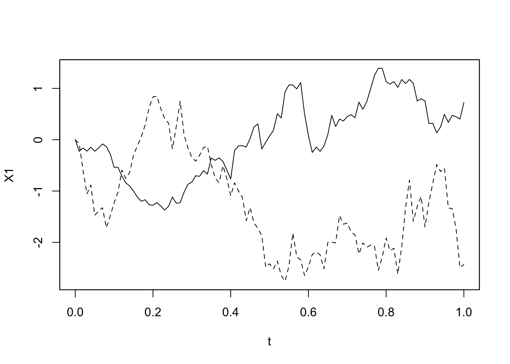
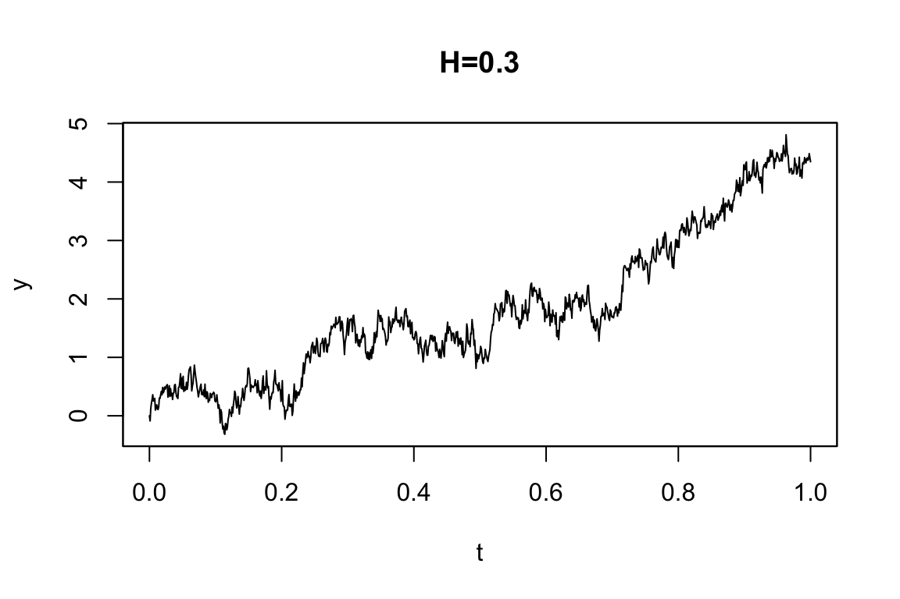
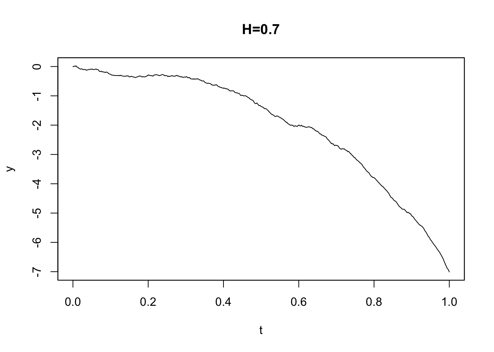
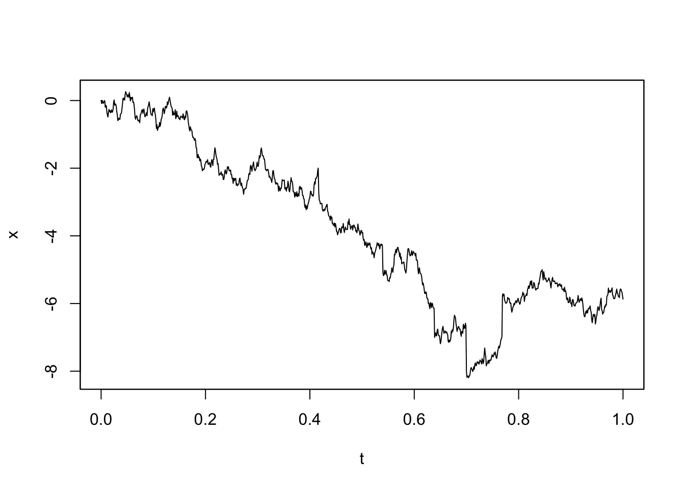
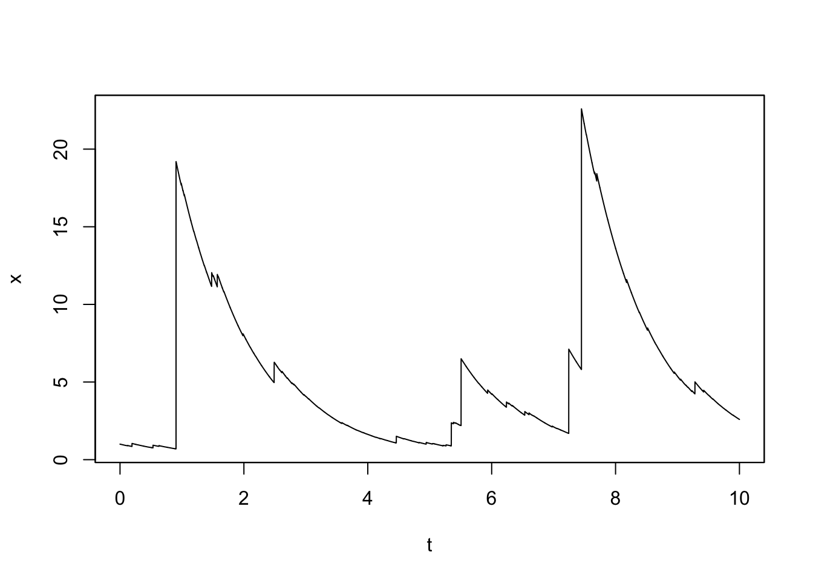
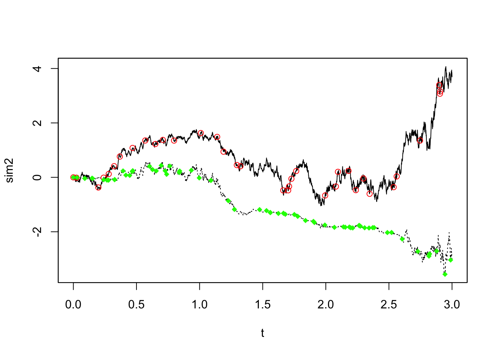
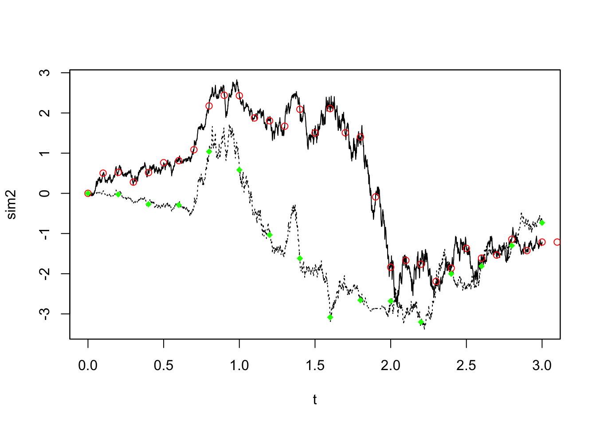
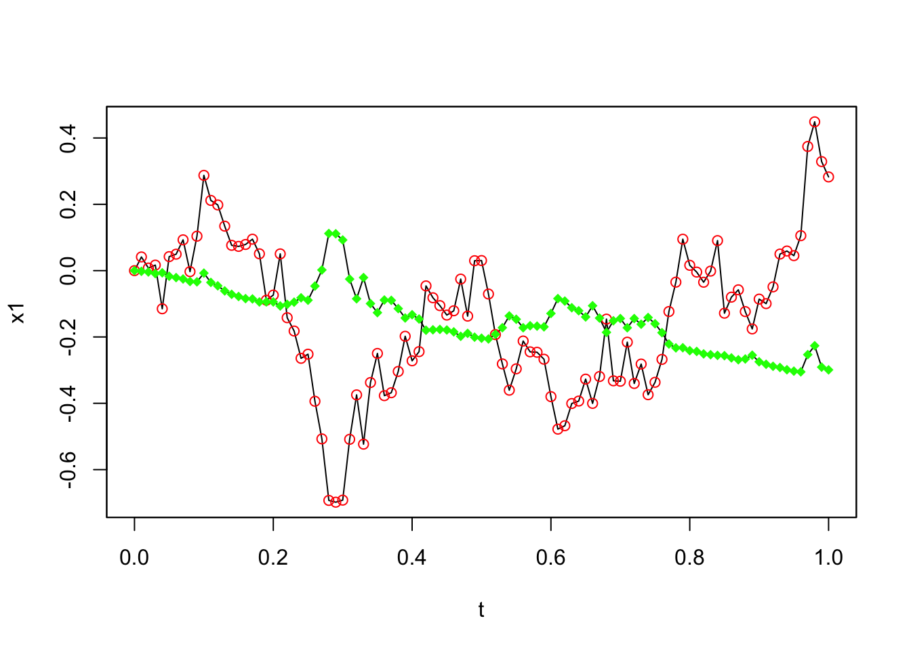

Code
library(yuima) # ライブラリの読み込みyuimaの構造と使い方をまとめます．
A Blog Entry on Bayesian Computation by an Applied Mathematician
$$%%% 演算子
%%% 線型代数学%%% 複素解析学 %%% 集合と位相
%%% 形式言語理論 %%% Graph Theory
%%% 多様体 %%% 代数 %%% 代数的位相幾何学 %%% 微分幾何学 %%% 函数解析 %%% 積分論%%% Fourier解析 %%% 数値解析
%%% 確率論%%% 情報理論 %%% 量子論 %%% 最適化 %%% 数理ファイナンス
%%% 偏微分方程式 %%% 常微分方程式 %%% 統計力学 %%% 解析力学
%%% 統計的因果推論 %%% 応用統計学 %%% 数理統計%%% 計量経済学
%%% 無限次元統計模型の理論%%% Banach Lattices
%%% 圏 %代数の圏 %Metric space & Contraction maps %確率空間とMarkov核の圏 %Sober space & continuous map %Category of open subsets %Category of sheave %Category of presheave, PSh(C)=[C^op,set]のこと %Convergence spaceの圏 %一様空間と一様連続写像の圏 %フレームとフレームの射 %その反対圏 %滑らかな多様体の圏 %Quiverの圏
%%% SMC %%% 括弧類%%% 予約語
%%% 略記
%%% 矢印類 $$
YUIMAプロジェクトとは，確率微分方程式のシミュレーションと推測のためのパッケージyuimaの開発を目指すプロジェクト．yuimaが取り扱う確率微分方程式は，「多次元 Wiener 過程または一般の Hurst 指数を持つ分数 Brown 運動に駆動され，Lévy ノイズが定めるジャンプを持ち得る」過程という極めて一般的な形を取り扱える．確率微分方程式を用いた更に複雑なモデルや推測手続きのための基盤インフラとなることを目指している．1
CRANはリポジトリでありユーザーによるパッケージ検索はとてもしづらいページ．
SourceForgeに似た，R言語のパッケージ開発者向けの協力的な開発環境を提供するプラットフォーム．
SVNリポジトリ、ドキュメントスペース、ダウンロードセクション、メーリングリスト、バグトラッキングシステム、ウィキなどが含まれています。R言語のパッケージ開発に特化した追加機能、例えばコミット時のmake check、パッケージの夜間ビルド、様々なプラットフォームでのテスト実施、CRANのようなリポジトリアクセスも提供しています。SourceForgeやGForgeでは提供されていないR固有の機能に焦点を当てており、GitHubのようなサイトと補完しあい、Rパッケージのバックエンドとして統合することが可能です。
install.packages("yuima", repos="http://R-Forge.R-project.org")library(yuima) # ライブラリの読み込み??yuima # Man pageを開くtoLatex関数yuimaまたはyuima.modelオブジェクトに対してtoLatex(model)を適用すると，モデルを数式で表したものを出力する．(Brouste et al., 2014, p. 第7節)
各クラスの含まれる属性・スロット（上段）と，そのクラスのオブジェクトに使えるメソッド（下段），そして継承関係は以下の通りである．yuimaクラスは，複数の構成要素（モデル，データ，手法）の集約になっている．2
classDiagram
yuima o-- yuima_model
yuima o-- yuima_sampling
yuima o-- yuima_data
yuima_model o-- model_parameter
class yuima{
yuima.model::model
yuima.sampling::sampling
yuima.data::data
-yuima.characteristic::characteristic
-yuima.functional::functional
initialize()
show()
plot()
simulate()
}
class yuima_model{
expr::drift
expr::diffusion
num::hurst
chr::time.variable
chr::state.variable
chr::solve.variable
-model.parameter::parameter
simulate()
}
class yuima_sampling{
num::Initial
num::Terminal
num::n
-num::delta
-list[num]::grid
}
class yuima_data{
original.data
zoo.data
}
class model_parameter{
list[chr]::all
chr::common
chr::diffusion
chr::drift
chr::jump
chr::measure
}
classDiagram
yuima o-- yuima_characteristic
yuima o-- yuima_functional
class yuima{
yuima.model::model
yuima.sampling::sampling
yuima.data::data
yuima.characteristic::characteristic
yuima.functional::functional
initialize()
show()
simulate()
}
class yuima_characteristic{
int::equation.number
num::time.scale
}
class yuima_functional{
F
list::f
num::xinit
num::e
}
setModel()コンストラクタyuima.model.Rにおいて次の定義を持つ，yuima.modelオブジェクトのコンストラクタである．
setModel <- function(drift=NULL,
diffusion=NULL,
hurst=0.5,
jump.coeff=NULL,
measure=list(),
measure.type=character(),
state.variable="x",
jump.variable="z",
time.variable="t",
solve.variable,
xinit=NULL){...}拡散モデル（Ornstein-Uhlenbeck過程） \[ dX_t=\theta(\mu-X_t)\,dt+\sigma\,dW_t,\quad (\mu,\theta,\sigma,X_0)=(0,1,0.5,0) \] からシミュレーションをするためのサンプルコードは次の通り．他に，駆動過程を一般のHurst指数 \(H\) についての分数Brown運動 \(W^H\) としたり，ジャンプを導入したモデルを指定することもできる．3
# 確率微分方程式モデルの設定
model <- setModel(drift = "theta*(mu-X)", diffusion = "sigma", state.variable = "X")
# サンプリングスキームの設定
sampling <- setSampling(Initial = 0, Terminal = 3, n = 1000)
# yuimaオブジェクトの作成
yuima <- setYuima(model = model, sampling = sampling)
# シミュレーションの実行
simulation <- simulate(yuima, true.parameter = c(mu = 0,theta = 1, sigma = 0.5),
xinit = 0.02)# 結果のプロット
plot(simulation)
まず，所望のモデルを行列の言葉で書く．例えば，2次元の場合で次のようなモデルを考える： \[ \begin{pmatrix}dX_t^{(1)}\\dX_t^{(2)}\end{pmatrix}=\begin{pmatrix}-3X_t^{(1)}\\-X_t^{(1)}2X_t^{(2)}\end{pmatrix}dt+\begin{pmatrix}1&0&X_t^{(2)}\\X_t^{(1)}&3&0\end{pmatrix}\begin{pmatrix}dW_t^{(1)}\\dW_t^{(2)}\\dW_t^{(3)}\end{pmatrix} \]
シミュレーションは次のように，各項の係数をベクトル・行列の形式でsetModelへと引き渡すことで行える． この場合，左辺を明示するためにsolve.variableのベクトルとしての指定が欠かせなくなる．4
solve_variable <- c("X1", "X2")
drift <- c("-3*X1", "-X1-2*X2")
diffusion <- matrix(c("1", "X1", "0", "3", "X2", "0"), 2, 3)
model <- setModel(drift=drift, diffusion=diffusion, solve.variable=solve_variable)
simulation <- simulate(model)plot(simulation, plot.type="single", lty=1:2)
標準分数Brown運動 \(W^H\) とは，Hurst指数 \(H\in(0,1)\) に対して， \[ \operatorname{E}[W^H_s,W^H_t]=\frac{1}{2}\biggr(\lvert s\rvert^{2H}+\lvert t\rvert^{2H}-\lvert t-s\rvert^{2H}\biggl) \] という共分散構造を持った中心Gauss過程である．\(H\ne1/2\) のとき，もはやMarkov過程でもセミマルチンゲールでもない．特に \(H>1/2\) のときに長期的な依存を持った振る舞いをし，これが多くの応用を呼んでいる．これに対して，SDE \[ dX_t=a(X_t)dt+b(X_t)dW_t^H \] で定まるモデルを定義できる．(Brouste et al., 2014, pp. 3.5節 p.15)
例えば，次の分数OU過程 \[ dY_t=3Y_tdt+dW_t^H \] は次のように定義する：
mod4A <- setModel(drift="3*y", diffusion=1, hurst=0.3, solve.var="y")
mod4B <- setModel(drift="3*y", diffusion=1, hurst=0.7, solve.var="y")
sim1 <- simulate(mod4A, sampling = setSampling(n=1000))
sim2 <- simulate(mod4B, sampling = setSampling(n=1000))
par(mfrow=c(2,1), mar=c(2,3,1,1))plot(sim1, main="H=0.3")
plot(sim2, main="H=0.7")
このシミュレーション法はCholesky法と(Wood & Chan, 1994) 法から選択が可能である．simulateメソッドのキーワード引数methodfGn="WoodChan", methodfGn="Cholesky"によって可能である．
複合Poisson過程 \(Z_t\) とは，Poisson時間に特定の分布に従うサイズの跳躍が起こるという過程である．これを用いて， \[ dX_t=a(t,X_t,\theta)dt+b(t,X_t,\theta)dW_t+dZ_t \] というSDEを通じてジャンプを持つ過程が定義できる．さらに \(Z_t\) の項に係数 \(c\) を持たせるには，\(X\) のジャンプを定めるランダム測度 \[ \mu(dt,dz)=\sum_{s>0}1_{\left\{\Delta Z_s\ne 0\right\}}\delta_{(s,\Delta Z_s)}(dt,dz) \] により，複合Poisson過程が \[ Z_t=\int^t_0\int_{\lvert z\rvert\le1}z(\mu(ds,dz)-\nu(dz)ds)+\int^t_0\int_{\lvert z\rvert>1}z\mu(ds,dz) \] と表せ，ジャンプ過程 \(X\) が，一般の関数 \(c\) を用いて \[ dX_t=a(t,X_t,\theta)dt+b(t,X_t,\theta)dW_t+\int_{\lvert z\rvert>1}c(X_{t-},z)\mu(dt,dz) \] \[ \qquad+\int_{0<\lvert z\rvert\le1}c(X_{t-},z)(\mu(dt,dz)-\nu(dz)dt) \] と表せる．
\(\nu\in\mathcal{P}(\mathbb{R}^d)\) がLévy測度であるとは， \(\nu(\{0\})=0\) かつ \[ \int_{\mathbb{R}^d}(1\land\lvert z\rvert^2)\nu(dz)<\infty \] を満たすことをいう．
例えば，強度 \(\lambda=10\) でGauss分布で大きさが決まる跳躍を持つLévy過程は，measure.type="CP"によって指定する．平均 \(0\) のOU過程 \[
dX_t=-\theta X_tdt+\sigma dW_t+dZ_t
\] は次のように定義できる：
mod5 <- setModel(drift=c("-theta*x"), diffusion="sigma", jump.coeff="1",
measure=list(intensity="10", df=list("dnorm(z,0,1)")), measure.type="CP",
solve.variable="x")
sim5 <- simulate(mod5, true.p = list(theta=1, sigma=3), sampling=setSampling(n=1000))plot(sim5)
一方で，逆正規分布の大きさのジャンプを持つLévy測度 \(\nu\) をもち，Poisson成分を持たないOU過程 \[ dX_t=-xdt+dZ_t \] は次のように定義できる：
mod6 <- setModel(drift="-x", xinit=1, jump.coeff="1",
measure.type="code", measure=list(df="rIG(z,1,0.1)"))
sim6 <- simulate(mod6, sampling=setSampling(Terminal=10, n=10000))plot(sim6)
simulate()関数の使い方yuimaまたはyuima.modelで定められたモデルから，Euler-Maruyama法によるシミュレーションを実行する関数．5 simulate.Rにてポリモーフィックな実装がなされている．
simulate(object, nsim=1, seed=NULL, xinit, true.parameter, space.discretized = FALSE,
increment.W = NULL, increment.L = NULL, method = "euler", hurst, methodfGn = "WoodChan",
sampling=sampling, subsampling=subsampling, ...)返り値は，引数objectに，シミュレーション結果をyuima.dataフィールドに格納したyuimaオブジェクトであり，それに対してplot()が使える．
objectがyuimaオブジェクトの場合時間にグリッド \(0=\tau_0<\tau_1<\cdots<\tau_j<\cdots\) を導入し，連続過程 \(\{X_t\}_{t\in\mathbb{R}_+}\) の離散化 \(\{\widetilde{X}_{\tau_j}\}_{j\in\mathbb{N}}\) を \[ \widetilde{X}_{\tau_{j+1}}:=\widetilde{X}_{\tau_j}+b(\tau_j,\widetilde{X}_{\tau_j})(\tau_{j+1}-\tau_j)+c(\tau_j,\widetilde{X}_{\tau_j})(W_{\tau_{j+1}}-W_{\tau_j}) \]
と定義する． \(W_{\tau_{j+1}}-W_{\tau_j}\overset{\text{iid}}{\sim}\mathrm{N}(0,\tau_{j+1}-\tau_j)\) を利用してサンプリングできる．
simulateメソッドはこの方法も（ジャンプを持たない過程について）実装している．現状，駆動過程が1次元のSDEに対してのみである．
これは，時間離散化 \(\{\tau_j\}_{j\in\mathbb{N}}\subset\mathbb{R}\) は次のように取る方法である： \[
\tau_0:=0,\quad\tau_{j+1}:=\inf\left\{t>\tau_j\mid\lvert W_t-W_{\tau_j}\rvert=\epsilon\right\}
\] ただし，実装の上では \[
\epsilon^2:=\frac{T}{n}=\Delta_n
\] としている．この方法は通常の時間離散化法よりも3倍高速になることが経験的に知られている．これはspace.discretized=TRUEで指定できる．デフォルトは=FALSEとなっており，時間離散化の方である．
他にも (Iacus, 2008) のシミュレーション法が実装予定である．
setSamplingコンストラクタsimulate関数はyuima.samplingオブジェクトも引数としてsampling = sampというように受け入れる．そして出力にそのまま引き継がれる．
setSampling.Rd
setSampling(Initial = 0, Terminal = 1, n = 100, delta,
grid, random = FALSE, sdelta=as.numeric(NULL),
sgrid=as.numeric(NULL), interpolation="pt" )例えば次の2次元モデルを考える
\[ dX_t^{(1)}=-\theta X^{(1)}_tdt+dW_t^{(1)}+X_t^{(2)}dW_t^{(3)} \] \[ dX_t^{(2)}=-(X_t^{(1)}+\gamma X_t^{(2)})dt+X_t^{(1)}dW_t^{(1)}+\delta dW_t^{(2)} \]
時区間 \([0,3]\) 上のグリッドから \(n=3000\) の粒度で観測するサンプリングオブジェクトは次のように定義する：
sol <- c("x1", "x2")
b <- c("-theta*x1", "-x1-gamma*x2")
s <- matrix(c("1", "x1", "0", "delta", "x2", "0"), 2, 3)
myModel <- setModel(drift=b, diffusion=s, solve.variable=sol)
samp <- setSampling(Terminal=3, n=3000)sim2 <- simulate(myModel, sampling=samp)
str(sim2@sampling)Formal class 'yuima.sampling' [package "yuima"] with 11 slots
..@ Initial : num 0
..@ Terminal : num [1:2] 3 3
..@ n : int [1:2] 3000 3000
..@ delta : num 0.001
..@ grid :List of 1
.. ..$ : num [1:3001] 0 0.001 0.002 0.003 0.004 0.005 0.006 0.007 0.008 0.009 ...
..@ random : logi FALSE
..@ regular : logi TRUE
..@ sdelta : num(0)
..@ sgrid : num(0)
..@ oindex : num(0)
..@ interpolation: chr "pt"これはsampそのものである．
subsampling関数の使い方２つの独立な指数分布を指定することで，Poisson到着時間を用いてサンプリングする，というyuima.samplingオブジェクトは次のように定義する：
newsamp <- setSampling(random=list(rdist=c(function(x)
+ rexp(x, rate=10), function(x) rexp(x, rate=20))))これを用いてサブサンプリングを実行できる：
newdata <- subsampling(sim2, sampling=newsamp)
plot(sim2, plot.type="single", lty=c(1,3), ylab="sim2")
points(get.zoo.data(newdata)[[1]], col="red")
points(get.zoo.data(newdata)[[2]], col="green", pch=18)
赤が \(X_t^{(1)}\)，緑が \(X_t^{(2)}\) の見本道でどこがサブサンプリングされたかを示している．
このサンプリング法はランダムに行った．これを示すフラグがregularである：
str(newsamp@regular) logi FALSE一方で，決定論的に，決まった周波数でサブサンプリングもできる：
newsamp2 <- setSampling(delta=c(0.1, 0.2))Warning in yuima.warn("'Terminal' (re)defined."):
YUIMA: 'Terminal' (re)defined.newdata2 <- subsampling(sim2, sampling=newsamp2)
plot(sim2, plot.type="single", lty=c(1,3), ylab="sim2")
points(get.zoo.data(newdata2)[[1]], col="red")
points(get.zoo.data(newdata2)[[2]], col="green", pch=18)
赤色のサブサンプリングは，緑色の２倍の頻度（半分の周波数）で行われている．
シミュレーション研究で，よく高頻度のサンプリングを行った後，推定のためにより低い頻度でのデータを抽出する，ということが行われる．これは１行で表現できる：
Y.sub <- simulate(myModel, sampling=setSampling(delta=0.001, n=1000), subsampling=setSampling(delta=0.01, n=100))
Y <- simulate(myModel, sampling=setSampling(delta=0.001, n=1000))plot(Y.sub, plot.type="single")
points(get.zoo.data(Y.sub)[[1]], col="red")
points(get.zoo.data(Y.sub)[[2]], col="green", pch=18)
zooとの依存関係zooというパッケージ (Zeileis & Grothendieck, 2005) が，時系列データを保存するために内部で用いられる．
より柔軟な時系列データの保存法ができたら，このdependencyは脱したいと考えられているようである．
確率変数の期待値を近似するのに，Monte Carlo法は普遍的な方法であるが，漸近展開もこれの代替手法である．精度さえ良ければ，計算時間は比較にならないほど速い．
例えば，\(d\)-次元拡散過程 \(X=(X^{(\epsilon)}_t)_{t\in[0,T]},\epsilon\in(0,1]\) を次のように定める： \[ X^{(\epsilon)}_t=x_0+\int^t_0a(X_s^{(\epsilon)},\epsilon)ds+\int^t_0b(X_s^{(\epsilon)},\epsilon)dW_s. \]
ただし，\(W_t\) は \(r\)-次元Wiener過程とした．そして，その汎函数
\[ F^{(\epsilon)}=\sum_{\alpha=0}^r\int^T_0f_\alpha(X_t^{(\epsilon)},\epsilon)dW_t^\alpha+F(X_T^{(\epsilon)},\epsilon),\quad W^0_t=t \]
を決めたいとする．例えば，Black-Scholesモデル \[ dX_t^{(\epsilon)}=\mu X_t^{(\epsilon)}dt+\epsilon X_t^{(\epsilon)}dW_t \] において，利子率が零である場合のアジアオプションの価格は \[ \operatorname{E}\left[\max\left(\frac{1}{T}\int^T_0X_t^{(\epsilon)}dt-K,0\right)\right] \] と表せる（これは線型である）．これは \[ F^{(\epsilon)}=\frac{1}{T}\int^T_0X_t^{(\epsilon)}dt,\quad r=1 \] と定めた場合に相当する．また，\(F^{(\epsilon)}=X^{(\epsilon)}_T\) とした場合に当たる \[ \operatorname{E}[(X^{(\epsilon)}_T-K)\lor0] \] がヨーロピアンコールオプションの価格になる．この値は閉じた形を持っているが，Asian optionについてはこの線型な設定においてさえ数値計算法が要請される．
ここでは，\(\epsilon\searrow0\) の極限で系が決定論的であるとする．すなわち， \[ b(-,0)=0 \] \[ f_\alpha(-,0)=0\quad(\alpha\in[r]) \] とする．すると \(X_t^{(0)}\) は次の常微分方程式 \[ \frac{d X_t^{(0)}}{d t}=a(X_t^{(0)},0),\quad X_0^{(0)}=x_0 \] の解であるから，\(F^{(0)}\) も定数 \[ F^{(0)}=\int^T_0f_0(X_t^{(0)},0)dt+F(X_T^{(0)},0) \] で与えられる．
さらに，\(a,b,f_\alpha,F\) がしかるべき正則性条件を満たすとき，汎函数 \(F^{(\epsilon)}\) にはある版が存在して \(\epsilon\in[0,1)\) に関して殆ど確実に滑らかである．特に， \[ \widetilde{F}^{(\epsilon)}:=\frac{F^{(\epsilon)}-F^{(0)}}{\epsilon} \] は次の確率展開を持つ： \[ \widetilde{F}^{(\epsilon)}\sim\widetilde{F}^{[0]}+\epsilon\widetilde{F}^{[1]}+\epsilon^2\widetilde{F}^{[2]}+\cdots\quad(\epsilon\searrow0) \]
この展開は，Malliavin解析のSobolev空間において厳密に成り立つ．これを導くのが (Watanabe, 1987) の理論である．
これに基づき，汎函数 \(F^{(\epsilon)}\) の近似を構成する機能がyuimaに実装されている．この漸近展開をオプションの価格付けに応用したのが (Yoshida, 1992) である．
setFunctionalコンストラクタBlack-Scholesモデル \[ dX_t^{(\epsilon)}=\mu X_t^{(\epsilon)}dt+\epsilon X_t^{(\epsilon)}dW_t \] が定める幾何Brown運動 \((X_t)\) のパラメータが \(\mu=1,x_0=1\) を満たす場合において，Asian call optionの価格は，汎函数 \[ g(x):=\max\left(F^{(0)}-K+\epsilon x,0\right) \] を計算すれば良い．
\(F^{(\epsilon)}\) の極限 \(F^{(0)}\) の値は，関数F0をyuima.functionalスロットが埋まったyuimaオブジェクトに適用することで得られる．
model <- setModel(drift="x", diffusion=matrix("x*e", 1, 1))
K <- 100
yuima <- setYuima(model=model, sampling=setSampling(Terminal=1, n=1000))
yuima <- setFunctional(yuima, f=list(expression(x/T), expression(0)), F=0, xinit=150, e=0.5)
F0 <- F0(yuima)print(F0)[1] 257.6134g <- function(x) {
tmp <- (F0 - 100) + (0.5*x)
tmp[(0.5*x) < (100-F0)] <- 0
tmp
}
asymp <- asymptotic_term(yuima, block=10, expression(0), g)str(asymp)List of 3
$ d0: num 159
$ d1: num -3.93
$ d2: num [1, 1] 4これを適切な和をとれば良い．
e = 0.5
asy1 <- asymp$d0 + e*asymp$d1
asy2 <- asymp$d0 + e*asymp$d1 + e^2 * asymp$d2はAsian call priceの，それぞれ1次と2次の漸近展開を与える．
\(X_t\) が幾何Brown運動の場合にしか (Levy, 1992) の近似は用いることはできない．例えばCIR模型 \[ dX_t=0.9X_tdt+\epsilon\sqrt{X_t}dW_t,\quad X_0=1, \] の場合でも，漸近展開は有効である．この状態でのEuropean call optionの価格は，2次までの漸近展開が与える値が，100万データ数によるMonte Carlo推定量の精度に匹敵し，当然計算量は圧倒的に少ない．
ほとんどの手法が，\(N\to\infty,\Delta_n\to0\) の極限で得られるデータ（高頻度データ）にも応用可能な手法になっている．
setYuimaコンストラクタmodel, sampling のみから作れば，サンプリングをし，その結果をyuima.dataオブジェクトとして格納する．
一方で，dataをyuimaオブジェクトに持たせる方法でもある：
my.yuima <- setYuima(data=setData(myData), model=myModel)data <- read.csv("http://chart.yahoo.com/table.csv?s=IBM&g=d&x=.csv")
x <- setYuima(data = setData(data$Close))
str(x@data)\(r\)-次元Wiener過程 \(\{W_t\}\) が定める拡散過程
\[ dX_t=a(X_t,\theta_2)dt+b(X_t,\theta_1)dW_t \]
のパラメータ \(\theta_1\in\Theta_1\subset\mathbb{R}^p,\theta_2\in\Theta_2\subset\mathbb{R}^q\) の推定を考えたい．データ \[ \boldsymbol{X}_n:=(X_{t_i})_{i=0}^n,t_i:=i\Delta_n \] に関する対数尤度は次の擬似対数尤度を用いて近似できる：
\[ \ell_n(\boldsymbol{X}_n,\theta)=-\frac{1}{2}\sum_{i=1}^n\left(\log\det(\Sigma_{i-1}(\theta_1))+\frac{1}{\Delta_n}\Sigma_{i-1}^{-1}(\theta_1)\biggr((\Delta X_i-\Delta_na_{i-1}(\theta_2))^{\otimes 2}\biggl)\right) \] ただし \[ \Delta X_i:=X_{t_i}-X_{t_{i-1}},\Sigma_i(\theta_1):=\Sigma(\theta_1,X_{t_i}) \] \[ a_i(\theta_2):=a(X_{t_i},\theta_2),\Sigma:=b^{\otimes2},A^{\otimes2}:=AA^\top \] とした．これに対して \[ \widehat{\theta}:=\mathop{\mathrm{arg\,max}}_{\theta}\ell_n(\boldsymbol{X}_n,\theta) \] と定めるのである．
実は，高頻度極限 \(\Delta_n\to0,n\to\infty\) において，\(\widehat{\theta}_1\) は漸近的に混合正規である (Genon-Catalot & Jacod, 1993)．\(\widehat{\theta}_2\) も一致性を持つには，条件 \(T=n\Delta_n\to\infty\) が必要である．これは \(T\) が有限であるとき \(\theta_2\) のFisher情報量も有限であり，それゆえこの設定したでは 一致推定量が存在しないためである．\(T\to\infty\) の下でエルゴード条件を仮定すれば，一致性だけでなく漸近正規性も達成される．局所Gauss近似を成立させるためには \(n\Delta_n^2\to0\) が必要であるが，これでは条件が強すぎる．任意の \(p\ge2\) に対して条件 \(n\Delta_n^p\to0\) しか満たさない場合での適応的推定法が (Uchida & Yoshida, 2012) によって，大偏差原理による議論に基づいて提案された．
\(T\) が大きくない場合， \(\theta_2\) には小標本的な影響が現れる．これは適応的Bayes推定でも議論する．適応的Bayes事後平均推定量は，上述の \(\widehat{\theta}_1,\widehat{\theta}_2\) と全く同じ漸近的性質を持つ．
これを実装するqmle関数が，stats4標準のmle関数に似せて作られている．
qmle(yuima, start, method = "L-BFGS-B", fixed = list(),
print = FALSE, envir = globalenv(), lower, upper, joint = FALSE, Est.Incr ="NoIncr",
aggregation = TRUE, threshold = NULL, rcpp =FALSE, ...)startは最適化を始める初期値を，名前に対応づける辞書の形で与える．yuimaオブジェクトはmodelとdataのスロットが埋められていなければならない．最適化はBFGSによって行われる．
ジャンプ過程への応用も今後予定されている．
例えば，次のモデル \[ dX_t=(2-\theta_2X_t)dt+(1+X_t^2)^{\theta_1}dW_t,\quad X_0=1, \] を考え，真値を \(\theta_1=0.2,\theta_2=0.3\) としてデータを生成する．
ymodel <- setModel(drift="(2-theta2*x)", diffusion="(1+x^2)^theta1")
n <- 750
ysamp <- setSampling(Terminal=n^(1/3), n=n)
yuima <- setYuima(model=ymodel, sampling=ysamp)
yuima <- simulate(yuima, xinit=1, true.parameter=list(theta1=0.2, theta2=0.3))これに対して，QMLEを実行してみる：
param.init <- list(theta2=0.5, theta1=0.5)
low.par <- list(theta1=0, theta2=0)
upp.par <- list(theta1=1, theta2=1)
mle1 <- qmle(yuima, start=param.init, lower=low.par, upper=upp.par)
summary(mle1)Quasi-Maximum likelihood estimation
Call:
qmle(yuima = yuima, start = param.init, lower = low.par, upper = upp.par)
Coefficients:
Estimate Std. Error
theta1 0.1855448 0.009543154
theta2 0.5100617 0.144892653
-2 log L: -438.7054 \(\theta_2\) の推定の方が圧倒的に難しいらしいことがよくわかる．
\(r\)-次元モデル
\[ dX_t=a(X_t,\theta_2)dt+b(X_t,\theta_1)dW_t \]
の擬似対数尤度
\[ \ell_n(\boldsymbol{X}_n,\theta)=-\frac{1}{2}\sum_{i=1}^n\left(\log\det(\Sigma_{i-1}(\theta_1))+\frac{1}{\Delta_n}\Sigma_{i-1}^{-1}(\theta_1)\biggr((\Delta X_i-\Delta_na_{i-1}(\theta_2))^{\otimes 2}\biggl)\right) \]
を考える．
まず，任意に初期値 \(\theta^\star_2\in\Theta_2\) を取り，\(\theta_1\) に事前分布 \(\pi_1\) を導入して，これに基づいてBayes事後平均推定量を \[ \widetilde{\theta}_1:=\frac{\int_{\Theta_1}\theta_1\exp(\ell_n(\boldsymbol{X}_n,(\theta_1,\theta_2^\star)))\pi_1(\theta_1)d\theta_1}{\int_{\Theta_1}\exp(\ell_n(\boldsymbol{X}_n,(\theta_1,\theta_2^\star)))\pi_1(\theta_1)d\theta_1} \] と定める．\(\pi_1\) は \(\Theta_1\) 全域を台に持つならば，高頻度極限で良い漸近的性質を持つ．続いて，\(\theta_2\) に事前分布 \(\pi_2\) を導入して，\(\widetilde{\theta}_1\) からBayes事後平均推定量を \[ \widetilde{\theta}_2:=\frac{\int_{\Theta_2}\theta_1\exp(\ell_n(\boldsymbol{X}_n,(\widetilde{\theta}_1,\theta_2)))\pi_2(\theta_2)d\theta_2}{\int_{\Theta_2}\exp(\ell_n(\boldsymbol{X}_n,(\widetilde{\theta}_1,\theta_2)))\pi_2(\theta_2)d\theta_2} \]
adaBayesの例同様のモデル \[ dX_t=(2-\theta_2X_t)dt+(1+X_t^2)^{\theta_1}dW_t,\quad X_0=1, \] を考え，真値を \(\theta_1=0.2,\theta_2=0.3\) としてデータを生成する．
ymodel <- setModel(drift="(2-theta2*x)", diffusion="(1+x^2)^theta1")
n <- 750
ysamp <- setSampling(Terminal=n^(1/3), n=n)
yuima <- setYuima(model=ymodel, sampling=ysamp)
yuima <- simulate(yuima, xinit=1, true.parameter=list(theta1=0.2, theta2=0.3))加えて，一様事前分布を用意する．
prior <- list(theta2=list(measure.type="code", df="dunif(theta2,0,1)"),
theta1=list(measure.type="code", df="dunif(theta1,0,1)"))
bayes1 <- adaBayes(yuima, start=param.init, prior=prior, mcmc=1000)
summary(bayes1) Length Class Mode
1 adabayes S4 summary(mle1)Quasi-Maximum likelihood estimation
Call:
qmle(yuima = yuima, start = param.init, lower = low.par, upper = upp.par)
Coefficients:
Estimate Std. Error
theta1 0.1855448 0.009543154
theta2 0.5100617 0.144892653
-2 log L: -438.7054 str(bayes1)Formal class 'adabayes' [package "yuima"] with 6 slots
..@ mcmc :List of 1
.. ..$ : chr "NULL"
..@ accept_rate:List of 1
.. ..$ : chr "NULL"
..@ coef : Named num [1:2] 0.208 0.121
.. ..- attr(*, "names")= chr [1:2] "theta1" "theta2"
..@ call : language adaBayes(yuima = yuima, start = param.init, prior = prior, mcmc = 1000)
..@ vcov : num [1:2, 1:2] 0 0 0 0
..@ fullcoef : Named num [1:2] 0.208 0.121
.. ..- attr(*, "names")= chr [1:2] "theta1" "theta2"coef(summary(bayes1))はエラーを生じる． > Error in object$coefficients : $ operator is invalid for atomic vectors > Calls: .main … eval_with_user_handlers -> eval -> eval -> coef -> coef -> coef.defaultadaBayesの後ろの方に必須の引数mcmcがある．Manpageを読む限りiterationと同じ役割では？ドリフト係数 \(a(X_t,\theta_2)\) に関する推定は，\([0,T]\) の長さに強い影響を受けることが理論的にも知られている．数値実験では \(n=750\) かつ \[ T=n^{\frac{1}{3}}\approx9.09 \] と取った．これをさらに \(n=500,T\approx7.94\) とすると，
n <- 500
ysamp <- setSampling(Terminal=n^(1/3), n=n)
yuima <- setYuima(model=ymodel, sampling=ysamp)
yuima <- simulate(yuima, xinit=1, true.parameter=list(theta1=0.2, theta2=0.3))
mle2 <- qmle(yuima, start=param.init, lower=list(theta1=0, theta2=0), upper=list(theta1=1, theta2=1))
bayes2 <- adaBayes(yuima, start=param.init, prior=prior, mcmc=1000)summary(mle2)Quasi-Maximum likelihood estimation
Call:
qmle(yuima = yuima, start = param.init, lower = list(theta1 = 0,
theta2 = 0), upper = list(theta1 = 1, theta2 = 1))
Coefficients:
Estimate Std. Error
theta1 0.2069500 0.01185564
theta2 0.4255265 0.16645230
-2 log L: -127.3117 str(bayes2)Formal class 'adabayes' [package "yuima"] with 6 slots
..@ mcmc :List of 1
.. ..$ : chr "NULL"
..@ accept_rate:List of 1
.. ..$ : chr "NULL"
..@ coef : Named num [1:2] 0.209 0.464
.. ..- attr(*, "names")= chr [1:2] "theta1" "theta2"
..@ call : language adaBayes(yuima = yuima, start = param.init, prior = prior, mcmc = 1000)
..@ vcov : num [1:2, 1:2] 0 0 0 0
..@ fullcoef : Named num [1:2] 0.209 0.464
.. ..- attr(*, "names")= chr [1:2] "theta1" "theta2"小標本でも適応的Bayes推定量はよく振る舞う．一方で，QMLEでは劣化が激しい．\(\widehat{\theta}_1\) は小標本の影響を \(\widehat{\theta}_2\) ほどは大きく受けない．
伊藤過程が非同期に離散観測する設定を考える．
adaBayesモジュールについてSDEモデル内のパラメータに対して適応的Bayes推論を実行するためのモジュールである．
(Brouste et al., 2014) 概要より．↩︎
ただし，marmaidの記法としてクラス名に.を許さないので，yuima.modelの代わりに図中ではyuima_modelと記述している．↩︎
モデルの左辺 \(dX_t\) はyuima.modelのスロットsolve.variableがstate.variableに暗黙のうちに一致させているところから暗黙に読み込んでいる．↩︎
(Brouste et al., 2014) 第3.4節 pp.12-13．↩︎
ただし，分数Gaussノイズが仮定された場合はCholesky法または (Wood & Chan, 1994) の手法による．↩︎